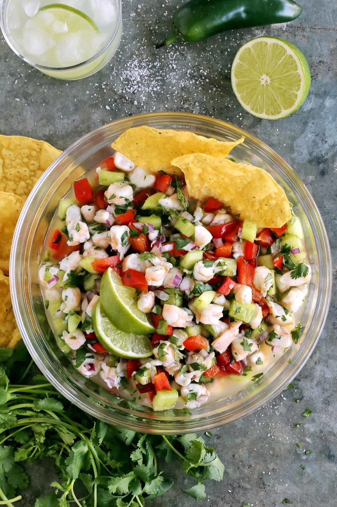

Shrimp Ceviche
This Shrimp Ceviche is a staple in Peru. Raw seafood is cooked by the lime juice! Now don't wrinkle your nose! You would never know the seafood
was not cooked prior to serving. Make sure to always use the freshest ingredients! You may substitute many types of seafood for scallops, for example: halibut, red
snapper, flounder, or swordfish.

Ceviche is a dish popular throughout Latin America, especially on the coasts of Mexico and other countries in the Caribbean. It’s made with raw seafood, like shrimp,
white fish, or octopus, that’s quickly marinated in lime juice. The acidity in the lime juice “cooks” the seafood and makes it perfectly safe to eat – not to
mention absolutely delicious!
Ceviche also includes other ingredients for added flavor, like onion, pepper (bell pepper and/or jalapeno), and even avocado or mango.
It’s light and refreshing. And while it can be pricey on restaurant menus, it’s super easy to make at home – which means I can eat it more often, YAY!!
WHAT YOU'LL NEED
This easy ceviche recipe is made with shrimp, lime juice, fresh vegetables, and cilantro. Feel free to alter things, but this is my top favorite way to make it!
- Shrimp – Use raw shrimp that is peeled and deveined with the tails removed. I recommend using medium to large sized shrimp, for noticeable bites of
succulent shrimp. I like to use 31/40 count shrimp.
- Lime – I use lots of fresh lime juice for this recipe, plus the zest of a whole lime. Freshly squeezed juice is essential – please do not make this
with bottled lime juice, it just won’t give the same fresh, bright flavor.
- Vegetables – Add cucumber, red bell pepper, red onion, and jalapeno for a variety of flavors and textures.
- Cilantro leaves – A common ingredient in ceviche and Peruvian dishes.
- Salt & pepper
HOW TO MAKE SHRIMP CEVICHE
BHomemade ceviche is quick and easy to make, ready in just 30 minutes!
- “Cook” the shrimp. Combine the chopped shrimp and half of the lime juice in a bowl. Then let sit for 15 to 30 minutes, to allow the acidity of the
lime to “cook” the shrimp.
- Add remaining ingredients. Mix the remaining ingredients together and once the shrimp turns white/pink, combine everything together.
- Serve. Enjoy your shrimp ceviche with tortilla chips or saltine crackers, plus some extra lime wedges. Because there can never be too much lime, in
my opinion!
Enjoy!